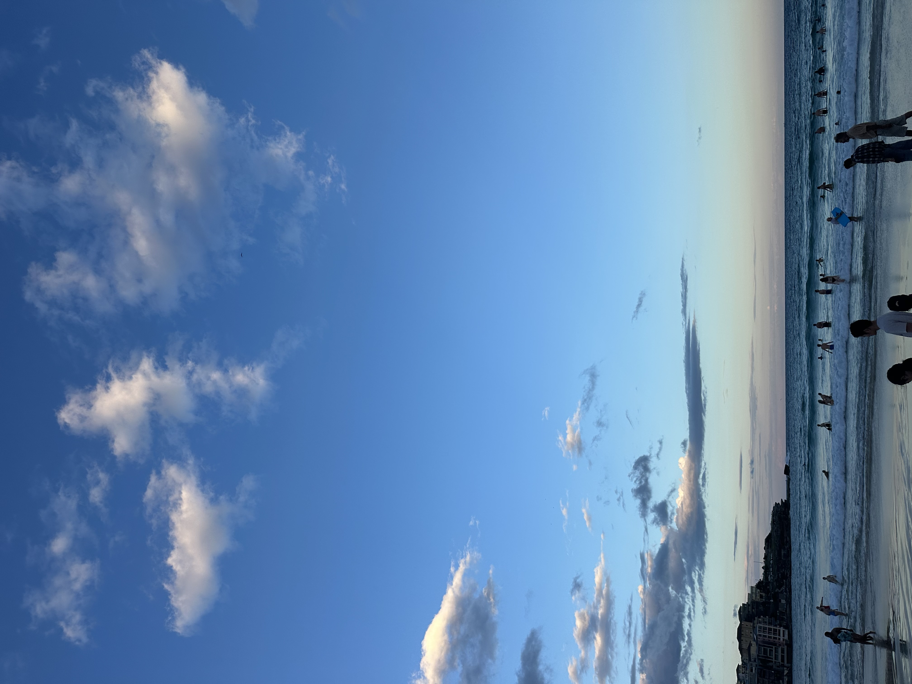

Why Visit Bondi?
- Beautiful golden sand and clear blue water
- Popular surfing destination with waves for all levels
- Scenic Bondi to Coogee coastal walk
- Trendy cafes, boutiques, and a buzzing atmosphere
Best Breakfast Spots
- The Depot – A small beachside cafe with amazing breakfast Visit website
- Porch and Parlour – Great breakfast and lunch options and amazing chicken wraps Visit website
- Harry's – Extremely popular space with great breakfast and trending strawberry matchas. Visit website
- D Bowls – Best acai bowl in bondi. Visit website
Top Dinner Restaruants
- Raw Next Door (RND) – An asian beachside restaurant offering a unique dining experience. Favorite dish: Chicken Karaage Visit website
- Guzman y Gomez – A Mexican restaurant that is fast and easy. Visit website
- Ikaria – Delicious mediteranean restaurant with amazing pita bread Visit website